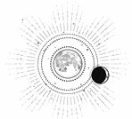

CAPÍTULO 20
Fue un beso arrebatador.
En cuanto sus labios se tocaron, Ferron la aplastó contra su cuerpo. La mano que tenía en su garganta se deslizó hacia su cabello, enredándose entre los rizos, sujetándolos con firmeza mientras el beso se intensificaba. Helena echó la cabeza hacia atrás, entregándose a ese fuego que la consumía. El Sumo Inquisidor siguió besándola con una pasión que dolía, pero sin llegar a romperla, como una tormenta bajando por su garganta.
Cuando jadeó, Ferron se apartó de sus labios y empezó a recorrer a besos su mandíbula y su cuello. Con la otra mano le rodeó la cintura.
Helena se quedó paralizada, sorprendida y a la vez rendida en las manos posesivas de Ferron.
Él le tiró del vestido con determinación hasta que arrancó los botones. Helena tenía la espalda contra la pared y su rodilla entre las piernas, sujetándola por la falda. Mientras tanto, Ferron movía las manos con rapidez; le rasgó la tela y la dejó desnuda hasta la cintura.
Al principio, el aire frío recorrió su piel, pero esa sensación desapareció en cuanto sintió el calor de sus manos y su boca. Se estremeció de anhelo. Ferron tenía la cabeza enterrada en la garganta de Helena y los labios junto a su oreja, sin dejar de darle besos desde el cuello hasta la clavícula. Cuando le pegó un mordisco, Helena… gimió.
El sonido rompió el silencio como un cristal hecho añicos.
Los dos se quedaron inmóviles y entonces Ferron se apartó con violencia.
Helena lo miró fijamente, demasiado desconcertada para moverse. La luz de la luna se colaba por la ventana; un sendero claro y de un plateado impresionante que iluminaba el punto donde ella estaba contra la pared, medio desnuda y… excitada.
Ferron abrió los ojos, conmocionado, mientras su cabello rubio caía desordenado sobre su rostro. Cuando se detuvo a mirarla, sus ojos adquirieron un brillo inquietante que parecía iluminarlo desde dentro. Se pasó una mano por la cara y se peinó hacia atrás. Helena vio que le palpitaba la mandíbula. Sin mediar palabra, hizo un gesto de burla.
Sin embargo, antes de que Ferron dijera nada, un sollozo horrorizado escapó de Helena. Intentó desesperadamente subirse el vestido, pero le temblaban los dedos. Estaba desgarrado, sin botones, así que se aferró a la tela y se cubrió con los brazos. Retrocedió tambaleante hasta que encontró la puerta.
Salió corriendo y huyó. Aceptar lo que había sucedido estuvo a punto de hacerla caer.
Se había mostrado receptiva a Ferron.
Él se había acercado para besarla y ella se lo había permitido. En ese momento, ni se le había pasado por la cabeza alejarlo. De hecho, se había derretido al sentir esa calidez de sentirse sujeta.
Atrapada en Puntaférreo, se aferraba a cualquier atisbo de amabilidad, a todo lo que se pareciera a la ternura.
Pero no era amabilidad. Ferron no era amable; simplemente no era cruel. No era tan horrendo como podría haber sido.
Y, para la mente rota de Helena, la ausencia de crueldad era un consuelo. Para su corazón hambriento, eso era suficiente.
Huyó a su habitación, tiró el vestido desgarrado al suelo bajo la maldita luz plateada y se puso otra ropa, como si así pudiera esconder lo que había hecho.
Helena valía más que aquello. Se llevó la mano al pecho; las uñas se le clavaron en la piel, como si con los arañazos pudiera entrar en razón.
—Lo… lo siento mucho, Luc —dijo con una voz estrangulada por la culpa.
No podía hacer esto. No podía.
No iba a permitir que su mente la engañara, incitándola a anhelar la atención de la persona responsable de que empezara la guerra. Ferron había causado un daño incalculable. Todo, todo lo que había pasado, todo era culpa suya, pero Helena sabía que se estaba consumiendo por dentro, que estaba desesperada por sentir algo que no fuera dolor, que no fuera muerte y vacío.
Pero ya no podía hacerlo más.
Podía soportar el horror de que la traicionara su cuerpo, pero no iba a permitir que la traicionara su mente.
Si era así, entonces prefería perder la cabeza.
Desde la ventana, contempló el jardín vallado, su prisión sin salida. Apoyó la mano temblorosa contra el cristal frío y el entramado de hierro, buscando el poder que ya no le pertenecía, pero no encontró nada.
Había desaparecido, como todo lo demás.
Se le escapó un sollozo quebrado y abatido y, acto seguido, echó la cabeza hacia atrás y la estampó contra el cristal y el hierro con todas sus fuerzas.
Lo volvió a hacer.
Y otra vez.
Sentía que la sangre le caía en los ojos, pero siguió haciéndolo.
Un brazo la rodeó por la cintura, y una mano firme le atrapó las dos muñecas y la apartó de la ventana. Un líquido rojo empañaba el cristal.
Helena se resistió con todas sus fuerzas, intentando liberarse a pesar del dolor que le provocaba, y clavó los dedos de los pies entre los barrotes de hierro para coger impulso.
—No. No. —La voz de Ferron sonó junto su oreja.
La sangre le cubría la cara y lo veía todo rojo. No dejaba de gritar. Toda la culpa y la angustia que había reprimido la estaba devorando por dentro. Gritó como si pudiera hacer trizas el mundo con ello.
Quería terminar.
No podía traicionar a todos: Luc, Lila, Soren, la enfermera Pace, su padre…
—No puedo… —Se liberó de nuevo y arañó con las manos el aire. Quería volver a estamparse contra la ventana.
Ferron le soltó las muñecas, pero solo para posar la palma de sus manos en su frente.
—¡No…!
Demasiado tarde. La resonancia del Sumo Inquisidor le recorrió todo el cuerpo, como si fuera un tapiz. Ferron encontró los hilos conductores de las emociones y los arrancó.
No la sedó ni la paralizó. Fue peor, algo más invasor todavía: le arrebató todo lo que sentía y la dejó aturdida, intentando reconciliarse con la disonancia.
Era el mismo efecto que le hacían las pastillas, pero esta vez estaba empleando la resonancia para que Helena permaneciera así todo el tiempo necesario, hasta que su cuerpo perdiera el ímpetu que le provocaban las emociones ahora desvanecidas.
Dejó de luchar y se desplomó en sus brazos. La sangre le corría por la cara como un reguero, goteando desde la barbilla. Ferron tenía las manos manchadas con su sangre, pero usó la yema de los dedos para curarle los arañazos y las heridas de la frente. Helena también notó su resonancia en el cráneo.
—Una fractura leve —le dijo Ferron, y la mayor parte del dolor desapareció antes de que la soltara.
Helena se quedó paralizada, vacía y perdida. Ferron le había arrancado sus emociones con tanto ahínco que era como intentar llegar al fondo de un pozo.
Miró la ventana manchada de sangre y se planteó volverlo a hacer, pero no serviría de nada. Ferron volvería a impedírselo, hasta que quedara hueca y complaciente: una estatua erosionada y sin rasgos marcados.
El Sumo Inquisidor le hizo girar el rostro para que lo mirara. Sus ojos seguían brillando.
—¿Por qué?
Helena le devolvió la mirada con hastío; todavía le dolía la cabeza. Al menos le dolía algo.
—¿Por qué qué?
—¿Por qué este repentino deseo ahora?
Un movimiento a su espalda llamó su atención. Una de las necrómatas entró en la habitación con las manos ocupadas y dejó la puerta abierta a su paso. Era la anciana, pero por un instante sintió que percibió en ella un aire extrañamente vivo.
No se movía de la forma antinatural que Helena estaba acostumbrada, sino más como un liche.
Como si se percatara del escrutinio de Helena, la mujer disminuyó la velocidad y se movió de forma más mecánica. Traía una palangana y un trapo, y empezó a limpiarle la cara a Helena.
—¿Por qué no? —dijo la chica con voz inerte—. He querido suicidarme desde el principio. Ya lo sabes.
Ferron entrecerró los ojos.
—Y tú sabes tan bien como yo que no te habrías matado haciendo eso.
Helena no respondió.
—Si no me lo dices, buscaré la respuesta yo mismo —añadió cuando se negó a responder.
Helena se encogió y apartó la cara para que la necrómata no pudiera seguir limpiándole la sangre que le quedaba en el rabillo de los ojos.
Abrió la boca varias veces antes de hablar.
—Creo que me pasa algo —dijo al final.
Ferron la miró de soslayo, como si fuera algo evidente.
—Es un instinto de supervivencia o… —Le parecía tan humillante hablar de ello que su cuerpo se puso en tensión y las palabras se le atragantaron—. Puede que sea un mecanismo de defensa. —Apartó la mirada—. Una vez, en la Academia, leí sobre una propuesta de investigación. El autor quería demostrar que sus sujetos podían llegar a desarrollar emociones hacia su… superior. —Estaba a punto de fallarle la voz—. Creía que, mediante sus métodos, conseguiría que sus sujetos fueran más complacientes. Que, si se les condicionaba para que fuesen lo bastante dependientes, acabarían racionalizando y justificando cualquier… cualquier daño que sufrieran, y hasta tratarían de crear una conexión emocional o sentimientos hacia la persona que los controlaba, como una especie de instinto de supervivencia.
Helena creyó que se desmayaba. Notaba sobre ella el peso de la mirada de Ferron.
—Solo era una propuesta, no sé si tendría algo de verdad, pero últimamente no dejo de pensar en eso —dijo con voz ahogada.
Se quedó mirando la ventana manchada de sangre.
—Preferiría pasar el resto de mi vida sufriendo violaciones en la Central que vivir un minuto teniendo sentimientos hacia ti.
El aire de la habitación pareció congelarse.
—Bueno —intervino Ferron tras un largo silencio—, con suerte estarás embarazada y no tendrás que elegir ninguna de las dos opciones. Así te quedarás tranquila.
Al darse la vuelta, la fuerza de voluntad de Helena se desvaneció. Extendió la mano y lo cogió del abrigo para que no se marchara.
Le temblaba todo el cuerpo, pero no podía soltarlo. Lo agarró con más fuerza. No quería estar sola, no lo soportaba.
Ferron levantó la mano y la posó sobre su hombro, y con eso fue suficiente. Helena se desmoronó y cayó en sus brazos. Apenas notaba el tacto de sus dedos en el brazo, pero dejó de sentir la quemazón en los pulmones al respirar. Apoyó la cabeza contra su pecho.
Estaba harta de que todo lo que la rodeaba fuera siempre frío, vacío e infinito.
De repente, Ferron echó la cabeza hacia atrás y la apartó de un empujón. Helena trastabilló hacia atrás y cayó sobre la cama. El Sumo Inquisidor abrió los ojos de par en par y Helena notó que su expresión era tensa. Miró a su alrededor y, después, a la puerta abierta.
Entonces soltó una carcajada suave y amarga.
—Eres patética, ¿eh? —dijo—. ¿Supervivencia? ¿En serio?
Helena no supo a qué se refería.
Ferron volvió a reír.
—¿De verdad esperas que me crea que, de repente, te importa sobrevivir? ¿Después de que todos los miembros de la Resistencia se mostraran dispuestos a morir por su causa? ¿Y tú eres distinta, aunque lleves meses imaginando cómo asesinarme y suicidarte?
Se agachó delante de ella. Nunca había visto tanta crueldad en su semblante. Había una maldad descarnada en su mirada.
—No, lo que te está carcomiendo por dentro no es un instinto de supervivencia ni un deseo inconsciente de calmarme. Lo que no soportas es el aislamiento. La pobre sanadora de la Llama Eterna, sin nadie a quien salvar. Nadie te necesita y nadie te quiere.
Le dedicó una sonrisa que dejaba sus colmillos al descubierto.
—No hay nada más. No soportas estar sola. Harás lo que sea por la gente a la que te permites querer. —Arqueó una ceja—. ¿No fue así en la guerra? Tú querías luchar, pero, cuando descubrieron lo que eras, Ilva Holdfast decidió que serías más útil siendo el chivo expiatorio de Holdfast. Te metieron en el corredor de la muerte antes de que Holdfast pisara el campo de batalla.
—No… fue… eso… lo… que… pasó. —Helena tenía las manos apretadas, clavándose las uñas en las palmas de las manos.
—Fue exactamente eso lo que pasó. Verás, el falcón Matias dejó sus aposentos prácticamente intactos. Mantuvo un montón de correspondencia con Ilva en la época en la que tú estabas de prácticas. Ella sabía que lo único que tenía que hacer era poner la vida de Holdfast en peligro para que hicieras todo lo que te pidieran. —Echó la cabeza hacia atrás—. Hubieras hecho cualquier cosa por tus amigos: tomar decisiones difíciles, pagar el precio sin quejarte, prostituirte si hacía falta, todo por el bien de la guerra. Pero dime…, porque siento verdadera curiosidad, ¿qué hizo Holdfast por ti para que tú lo merecieras?
Helena lo fulminó con la mirada.
—Luc era mi amigo. Era mi mejor amigo.
—¿Y qué?
Helena respiró entrecortadamente y apartó los ojos.
—Mi padre lo dejó todo para que estudiara en la Academia, pero… fue… fue duro. Yo… yo no quería que mi padre supiera lo difícil que estaba siendo. —Sintió como si tuviera una piedra atascada en la garganta—. Pero a mí… me daba mucho miedo estropearlo todo y no… no conocía a nadie. Luc podría haberse hecho amigo de cualquiera, pero me eligió a mí. No hubiera tenido a nadie de no ser por él.
—¿Y ahora qué? —dijo Ferron, alisándose el abrigo para eliminar las marcas que los dedos de Helena habían dejado en la tela—. ¿Soy el sustituto de Holdfast? ¿No puedes evitar cogerle cariño a cualquiera que cometa el error de hablar contigo?
Helena se encogió, pero Ferron no había terminado.
—Entonces te lo dejaré bien claro. No te quiero en mi vida. Nunca te he querido. No soy tu amigo. No hay nada que desee más que el momento en que por fin me libre de ti.
Se dio la vuelta y se fue.
Cuando Stroud regresó dos semanas después, Helena se sometió al examen médico sin pronunciar palabra. Había pasado ese tiempo en una neblina de desconcierto, apenas consciente del paso de los días. Como si fuera un fantasma, dejó que el mundo se deslizara a su alrededor mientras ella permanecía congelada en el tiempo.
—Tienes muy mala cara —comentó Stroud con una mueca de desagrado—. ¿Cómo van los intentos del Sumo Inquisidor?
A Helena se le cerró la garganta y no dijo nada. Se quedó mirándose el regazo, arrugando la fina tela de sus braguitas entre los dedos.
—Túmbate —le ordenó Stroud, dejando el bolso en la mesita de noche.
Stroud le retiró las braguitas y colocó una mano fría en la parte baja del abdomen.
—Creo que es demasiado pronto para saberlo, pero a veces lo noto. En tu caso, cuanto antes lo sepamos, mejor.
Helena sintió que le latía el corazón en las sienes.
Stroud frunció el ceño y, con ello, se acentuaron todas sus arrugas. Hizo que su resonancia se adentrara más, hasta que esbozó un gesto de sorpresa.
—Estás embarazada.
Al principio, Helena no sintió nada. Eran palabras abstractas, conceptuales.
Entonces la atravesaron como una espada.
Sin embargo, no sintió que se le desbordaran las emociones; Ferron se las había arrancado todas. Estaba vacía.
Así que se vino abajo.
Fue como intentar respirar bajo el hielo; no había aire, solo una presión infinita que la aplastaba por todos lados. Su corazón se le aceleró tanto que lo único que percibía era el rugido de su torrente sanguíneo.
Stroud seguía hablando, pero Helena no escuchaba las palabras.
«No».
«No, por favor».
«No, no, no».
Era culpa suya. Se había dejado llevar, no se había resistido.
Stroud continuaba hablándole, cada vez más fuerte. Las palabras sonaban amortiguadas; eran un ruido envolvente e indescifrable.
La habitación le dio vueltas, como si fuera a desaparecer. Helena notó que se le cerraba la garganta, que se asfixiaba. Sintió un dolor punzante en el pecho, como si algo quisiera abrirla en canal desde dentro.
«No. No, por favor».
Stroud extendió la mano y colocó los dedos en el cuello de Helena, pero la chica empezó a gritar.
No era un grito de angustia como le ocurrió con Ferron, sino gritos desgarradores, como los de un conejo moribundo. Agudos, rápidos, repetitivos. Se le escapaban uno tras otro.
Stroud estaba perpleja y le dio un bofetón en la cara.
Helena no podía dejar de gritar.
Todo fue perdiendo color y la visión se le estrechó como si estuviera en un túnel.
Ferron estaba delante de ella, con las manos apoyadas en sus hombros.
—Cálmate —le dijo con firmeza, aunque le temblaban las manos. La acercó para acortar el espacio que los separaba—. Respira.
Le apretó tanto los hombros que la sacó del entumecimiento.
—Vamos. Tienes que respirar.
Helena consiguió tragar una bocanada de aire y se echó a llorar.
—No… —dijo tartamudeando—. No, no, no. Por favor. ¡No!
—Sigue respirando, eso es lo único que tienes que hacer. Respira —le instó Ferron con un gesto cansado. Tenía la mandíbula en tensión.
Se giró para fulminar a Stroud con la mirada, pero no soltó a Helena.
—Sabes que es propensa a los ataques de ansiedad. No puedes soltarle algo así de repente —masculló entre dientes.
Stroud se enderezó.
—Me dijisteis que le daban miedo las sombras. Si va a seguir añadiendo problemas, deberíais hacer una lista y ponerla en la pared. —Puso los ojos en blanco y se cruzó de brazos—. ¿No debería alegrarse de que ya no tiene que esforzarse por concebir?
—No. Y deberías haberlo sabido. Empiezo a pensar que la estás torturando a propósito. ¿Por qué?
—Eso no es cierto —repuso Stroud demasiado rápido.
Ferron entrecerró los ojos.
—Sé sincera. No disfrutarás de que te sonsaque las respuestas.
Stroud palideció y miró hacia la puerta, como calculando la distancia.
—El Sumo Nigromante me contó que fue ella la que bombardeó el laboratorio del puerto Este. Habíamos ganado. Estábamos celebrando la victoria y ella… ¡mató a Bennet! Todos sus años de trabajo. Mi trabajo. Todos nuestros experimentos. ¡Lo destruyó todo!
Se hizo un largo silencio, y los ojos de Ferron se convirtieron en ranuras.
—Entiendo que eres una devota fanática de su recuerdo, pero torturar psicológicamente a una prisionera no sirve de mucho cuando ni siquiera recuerda lo que pasó. Ni tu programa ni tu rango te dan autoridad para vengarte de mi prisionera.
Ferron soltó a Helena y se volvió hacia Stroud. Después, se quitó los guantes.
—Parece que se te ha olvidado que no me gusta que los imbéciles interfieran con ella. He invertido mucho dinero y esfuerzo para mantener su entorno, así que me da igual lo importante que te creas por haber estado a las puertas del laboratorio cuando explotó. El único motivo por el que sigues manteniendo tu puesto es porque todos los que eran más aptos para la tarea están muertos. En todo caso, deberías agradecérselo. Si los demás hubieran sobrevivido, no serías nadie.
Stroud palideció y se le dilataron las fosas nasales.
—Trabajé codo con codo con Bennet. Mi programa de repoblación es…
—Una farsa. Una tapadera perfecta para que el Sumo Nigromante consiga lo que quiere y sacie el apetito infinito de sus seguidores —le espetó Ferron—. Solo sobreviviste porque eras una auxiliar de laboratorio venida a más a la que enviaron a buscar más sujetos. Si no fuera por Shiseo, no tendrías nada que justifique el tiempo que llevas gestionando la Central. ¿Crees que no se nota lo poco que has producido desde que se marchó? No me extraña que tuvieras tantas ganas de empezar con el programa de repoblación.
Ferron la estaba encarando con el mismo tono implacable y despreciativo con el que había tratado a Aurelia.
—Después de que pusieras en riesgo mi misión, investigué tu proyecto. Le diste tanto bombo en los periódicos que tuve curiosidad por ver los datos tan reseñables que sustentaban tus teorías. Yo también me dediqué a la investigación durante un tiempo. ¿Podrías decirme qué controles has establecido? ¿O mostrarme estadísticas o datos históricos? Por mucho que busco, solo encuentro información anecdótica en artículos periodísticos sin base.
—Todavía… estamos en las p-primeras fases de… —tartamudeó Stroud. Ahora su rostro cambiaba de color entre el blanco y el rojo de las mejillas—. Soy una científica acreditada…
—Tu «programa» es un chiste. —Ferron le habló en un tono más grave y amenazante—. Tus auxiliares de laboratorio están más cualificados que tú. La única habilidad que tienes es la vivemancia y yo soy más competente que tú.
Ferron le hizo un gesto al mayordomo, que estaba junto a la puerta.
—Acompaña a Stroud a la salida y no vuelvas a dejarla a entrar en esta casa salvo que esté yo presente para escoltarla.
Stroud soltó un bufido y farfulló algo sobre contárselo al Sumo Nigromante, pero no dejaron de temblarle las manos mientras recogía los expedientes. Cuando se cerró la puerta, Ferron se volvió hacia Helena.
Ella supo que la estaba mirando sin tener que levantar la cabeza.
Ferron estiró la mano y Helena permaneció inmóvil. No le tocó la cara, sino que deslizó los dedos por su nuca, hasta la hendidura en la base del cráneo.
Entonces sí que alzó la mirada, pero no encontró ninguna emoción en su rostro, como si fuese de mármol.
—No me fío de que estés consciente en este estado —dijo.
Helena sintió su resonancia, delicada y punzante como el roce de una aguja.
Una pesadez la invadió, como un maremoto oscuro que la hizo desplomarse.
—No… —pronunció, aunque no sabía bien contra qué protestaba, contra todo.
Aun así, el mundo se le escapó de las manos. Fue vagamente consciente de que Ferron la dejaba sobre la cama y la tapaba con el edredón.
—Lo siento mucho.